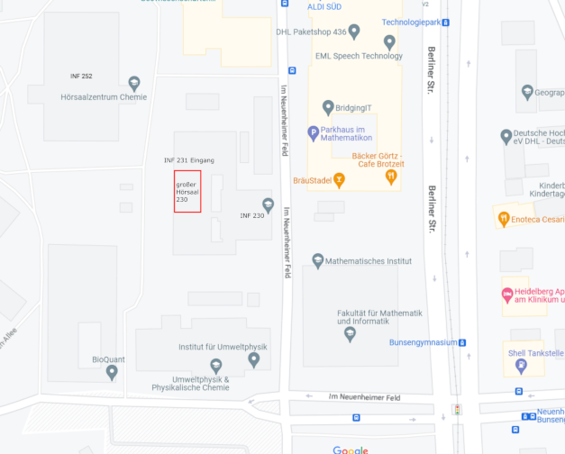

Kursinformationen
Beschreibung
In diesem Blockkurs wird eine Einführung in die Programmierung mit C++ unter Linux gegeben. Das Ziel ist die Grundlagen der Programmiersprache C++ zu erlernen und den Umgang mit zugehörigen Werkzeugen zur Softwareentwicklung zu erlernen.
Vorkenntnisse
Es sind EDV-Grundkenntnisse hilfreich. Eine kurze Einführung in Shell unter Linux wird gegeben.
Konzept
Der Kurs besteht aus 11 Vorlesungen und 11 Übungen plus einer Fragestunde. In den Vorlesungen werden die Grundlagen für die nachfolgenden Übungsaufgaben gelegt. Die Übungsaufgaben dienen insbesondere dem Selbststudium.
Am Freitag, 31. März gibt es eine Projektaufgabe, deren Lösungen bis Montag, 03. April, 17:00 Uhr per Moodle als Archiv abzugeben sind.
Update 2023-04-01, 16:47: Das gitlab ist derzeit nicht erreichbar. Dadurch wurde die Abgabe bis 17:00 Uhr verlängert.
Update 2023-04-03, 12:53: Das gitlab ist nicht erreichbar. Die Abgabe erfolgt in Moodle. Bitte möglichst eine einzelnes Archiv einreichen statt einzelner Dateien.
Termine und Zeitplan
Nur der Montag, 27. März, wird wegen Streik gestreamt.
| Zeit | Veranstaltung | Raum |
|---|---|---|
| 27. März - 31. März, 9:15 - 11:30 Uhr | Vorlesung | Hörsaal Mathematikon |
| 03. April - 06. April, 9:15 - 11:30 Uhr | Vorlesung | Hörsaal Mathematikon |
| 03. April, 17 Uhr | Abgabe Projektaufgabe | |
| 27. März - 06. April, 13 - 15 und 15 - 17 Uhr | Übung | INF 205/CIP-Pool |
| 12. April 9:30 - 11:00 Uhr | Fragestunde | Seminarräume A+B |
| 12. April 13:00 - 17:00 Uhr | Nachbereitung Übung | INF 205/CIP-Pool |
| 14. April 9:30 - 11:00 Uhr | Klausur | INF230/großer Hörsaal |
| 09. Mai 15:00 - 18:00 Uhr | Klausureinsicht | INF 205/2/319 |
Übungsbetrieb
Die Übungen finden vom 27. März bis 6. April im Zeitraum 13 - 17 Uhr, unterteilt in zwei Übungsgruppen, statt. Bitte tragen Sie sich in eine Übungsgruppe im Müsli MÜSLI ein.
Die Bewertung erfolgt über Moodle. Tragen Sie sich bitte ebenfalls im Moodle ein.
Die Tutoren sammeln ihre Lösungen auf gitlab.
Prüfung/Einsicht
Die Klausur findet am 14. April von 9:30-11:00 Uhr in INF 230, großer Hörsaal statt.

Zur Zulassung der Klausur sind
- ca. 50% der Punkte der Projektaufgabe notwendig.
- Erklärung einer Lösung den Tutoren zur Übungszeit
Wer eine Zulassung für IPK vom letzten Wintersemester oder Sommersemester hat, meldet sich bitte UMGEHEND per E-Mail mit Namen und Matrikelnummer beim Dozenten.
Die Noten stehen im Moodle. Die Klausureinsicht wird am 9. Mai von 15:00 bis 18:00 Uhr in INF205/2/319 stattfinden. Bitte bis 8. Mai 15:00 Uhr per E-Mail anmelden.
Inhaltliches Material zur Veranstaltung
-
- Empfehlung: WSL
- Installation von SDL kann vorerst ignoriert werden
-
Vorlesungen und Themen:
-
- März: Linux, Shell, git, Folien
-
- März: Syntax, Kontrollfluss, Ein- und Ausgabe, Folien
-
- März: Zeiger, Container, mehrere Dateien, Buildsysteme, Folien
-
- März: Objektorientierte Programmierung, Polymorphie, Folien
-
- März: Templates, Code-Reuse, Iteratoren, Folien
-
- April: Funktoren, Iteratoren, Operatorüberladung, Folien
-
- April: Debugging, Folien
-
- April: Software Pattern, Folien
-
- April: Zusammenfassung, Folien
-
-
Hinweise aus Diskussion in Vorlesung:
-
- März: Die Initialisierung von array und vector mit einer geschweiften Klammern ist idiomatischer. Der Grund für die (erwartete) Initialisierung mit zwei Klammern wird auf stackoverflow gut erklärt.
-
-
Hilfsmittel:
-
Übungsaufgaben:
Literatur
Die Lehrveranstaltung kommt ohne zusätzliche Literatur aus.